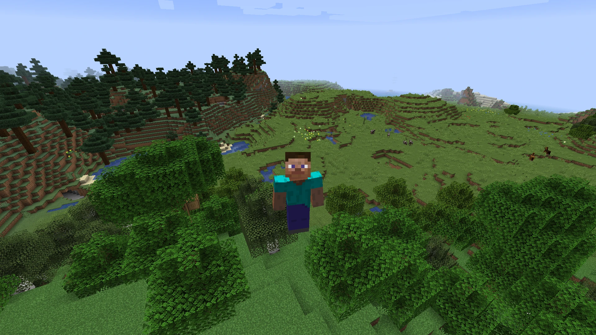
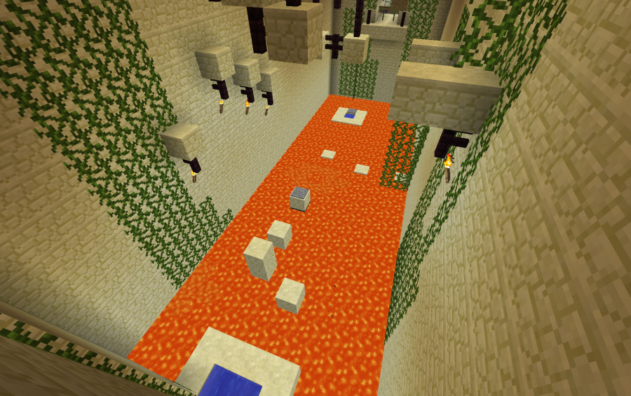
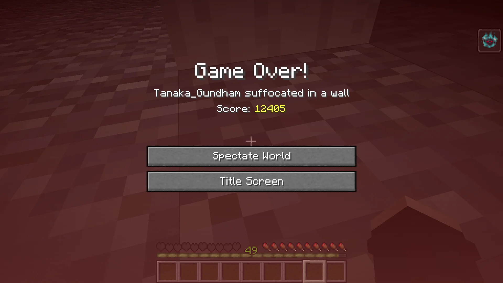
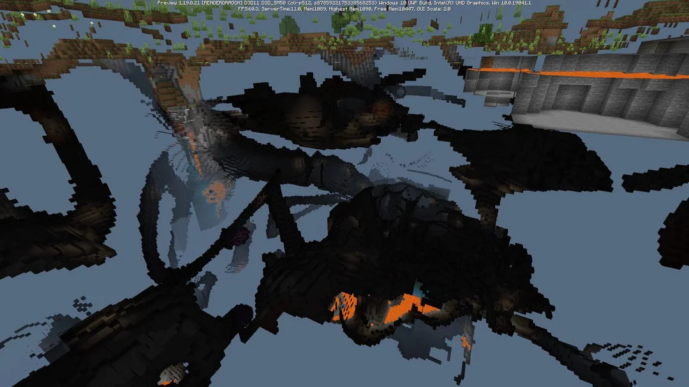
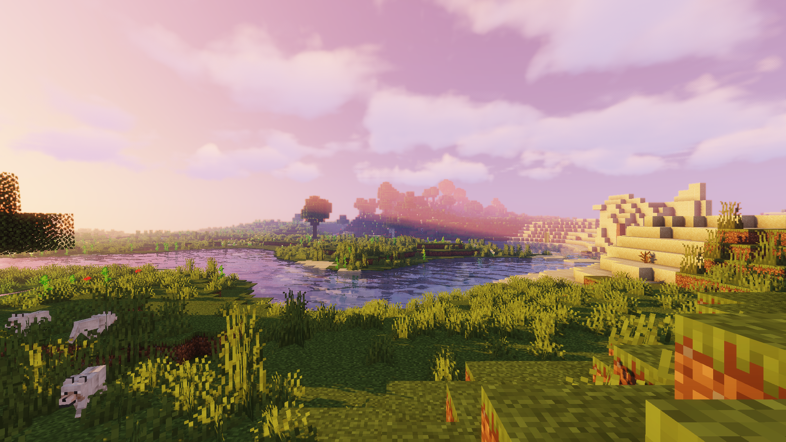
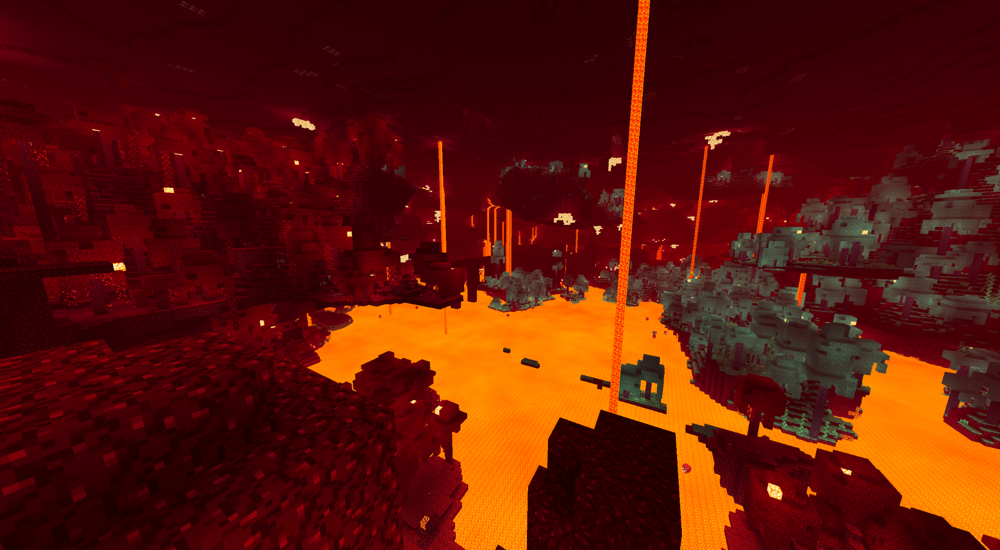
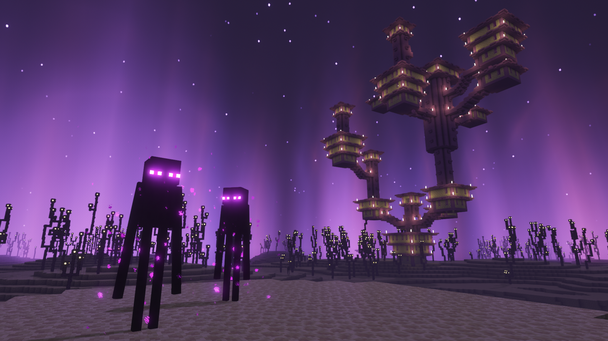

Sobrevivência
Reúna madeira, pedra e ferro para fabricar ferramentas, construir um abrigo e conseguir alimentos. Proteja-se dos monstros à noite e supere os desafios do mundo.
MINECRAFT
Explore, construa, imagine
Minecraft é um jogo de aventura, construção e sobrevivência. Em um mundo aberto formado por blocos, você coleta recursos, constrói estruturas e descobre novos lugares no seu próprio ritmo.
Crie casas, castelos, cidades e máquinas, explore cavernas e enfrente criaturas — até mesmo o temível Ender Dragon.
Conheça os modos Conheça dimensões
Escolha como jogar
Cada modo oferece um jeito diferente de explorar e criar.
Reúna madeira, pedra e ferro para fabricar ferramentas, construir um abrigo e conseguir alimentos. Proteja-se dos monstros à noite e supere os desafios do mundo.

Use blocos e itens à vontade, voe e construa sem se preocupar com fome ou perigos. É o espaço ideal para tirar grandes ideias do papel.

Explore mapas com histórias, missões e desafios. Resolva enigmas, encontre caminhos secretos e cumpra objetivos criados por outros jogadores.

O modo Hardcore do Minecraft é um modo de jogo em que você tem apenas uma vida e a dificuldade fica sempre no Difícil. Se morrer, você não poderá continuar jogando normalmente naquele mundo, apenas assistindo no modo espectador. Por isso, é preciso ter muito cuidado, conseguir bons equipamentos e sobreviver aos monstros e aos perigos do jogo.

O modo Espectador do Minecraft permite que o jogador explore o mundo livremente, voando através de blocos e observando cavernas, construções e outros jogadores. Nesse modo, não é possível interagir normalmente com o ambiente, sendo ideal para observar o mundo sem participar diretamente do jogo.
Outros mundos para explorar
Use estes cartões para contar o que torna cada dimensão especial.

O Mundo Superior é onde começa a aventura do jogador. Sua história está ligada a antigas construções, como templos, minas abandonadas e cidades antigas, que sugerem que outras pessoas viveram ali antes. O jogador explora esse mundo para descobrir seus mistérios e encontrar pistas sobre o passado.

O Nether é uma dimensão assustadora, cheia de lava, fortalezas e criaturas perigosas. Suas ruínas e bastiões mostram que civilizações antigas, como os Piglins, construíram estruturas nesse lugar. As fortalezas do Nether também guardam pistas importantes para quem deseja chegar ao End.

O End é uma dimensão misteriosa, formada por ilhas flutuantes e habitada por Endermans e pelo Ender Dragon. Suas cidades antigas e seus navios indicam que alguém construiu estruturas naquele lugar.
Sugestões
Algumas ideias para você começar, explorar e se divertir ainda mais no jogo.
Escolha um lugar alto, perto de recursos e com espaço para guardar o que você coletar.
Procure carvão, ferro e redstone para avançar e criar ferramentas mais fortes.
Experimente criativo para criar sem limites, sobrevivência para desafios e aventura para mapas.
Defina objetivos como construir uma cidade, derrotar o dragão ou colaborar com amigos.